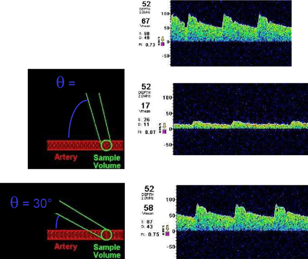

Bienvenue Sur Medical Education
Doppler trans-crânien
AdulteSpécialité : traumatologie / vasculaire /
Points importants
- Examen non invasif, transportable permettant une évaluation de la circulation intracérébrale
- Aide dans l'appréciation de la gravité d'un patient cérébro-lésé mais cet examen ne remplace pas un examen clinique répété et en particulier la surveillance simple des pupilles
- Cet examen peut avoir un intérêt dans la surveillance de patients victimes de traumatisme crânien grave intubés et ventilés pour évaluer l'HTIC, dans le cas d'hémorragie méningée et dans le cadre particulier de la mort encéphalique
-
Toutefois, le Doppler trans-crânien (DTC) ne remplace pas la mesure invasive de la pression intracrânienne
Indications
- Estimation de la souffrance cérébrale chez le patient traumatisé crânien (vélocités diastoliques basses Vd < 20 cm/s) ou index de pulsatilité > 1.5
- Surveillance de l’HTIC chez le patient cérébro-lésé (traumatisme ou accident vasculaire…)
- Hémorragie sous-arachnoïdienne et ses complications : hydrocéphalie aiguë, vasospasme artériel
- Evaluation de l’autorégulation cérébrale par la mesure de la réactivité vasculaire à des variations de PA systémique.
- Passage ou aide au diagnostic du passage en état de mort encéphalique
Contre-indications
-
Pas de contre-indication à cet examen
Présentation du matériel
- Matériel dédié avec sonde de doppler de basse fréquence à 2 Mhz, suffisamment puissante pour le passage du faisceau doppler au travers de l'écaille osseuse temporale
-
Actuellement, monitorage accessible sur la plupart des échographes avec des sondes parfois moins puissantes mais utilisables en dépistage
Description de la technique
Rappel sur la mesure de l'onde doppler
- La mesure repose sur une technique de doppler pulsé visant à enregistrer la vitesse des globules rouges dans les axes artériels
- La vitesse mesurée est obtenue selon la formule suivante : V mesurée = V réelle x cos a (a correspond à l'angle d'insonation c'est-à-dire l'angle entre le faisceau doppler et l'axe vasculaire)
-
Ainsi plus l'angle est important plus la mesure des vélocités est sous-estimée :
- entre 0 et 15°, une erreur de 4-5% est attendue
- entre 15 et 35°, une erreur proche de 10% existe
- au-delà de 30°, l'erreur atteint près de 20%
- au-delà de 50°, la valeur mesurée est sous-estimée de 50%
-
L'intérêt de la mesure centrée sur l'artère sylvienne est que :
- sa portion M1 est perpendiculaire à l'écaille temporale et donc alignée sur le faisceau doppler ce qui limite les erreurs de mesure
- cette artère assure la perfusion d'une grande partie de l'hémisphère exploré
Technique
- La principale artère mesurée est l'Artère Cérébrale Moyenne (ACM) ou artère sylvienne
fichier_290 Mesure doppler
- Le stylet doppler est positionné perpendiculairement à la peau après application de gel échographique entre le cantus orbitaire latéral et le condyle mastoïdien à l'endroit ou l'os temporal est le plus fin
fichier_291 Photo Position du stylet doppler
- La recherche d'une réponse doppler entre 40 et 60 mm de profondeur débute dans une direction légèrement antérieure et céphalique puis s'effectue en mobilisant délicatement la sonde pour explorer méthodiquement la zone correspondante
- L'amplitude du flux et sa direction (positive ou négative) renseignent sur les artères visées du polygone de Willis
- Il est possible d'évaluer le tronc basilaire par une fenêtre occipitale située à la base du crâne en regard du trou occipital
Représentation graphique
- La représentation graphique comporte en abscisse, le temps, et en ordonnée, les fréquences (vitesses)
- La courbe obtenue (courbe des vélocités maximales) permet de mesurer la vélocité systolique contemporaine de la systole cardiaque (Vs) et la vélocité diastolique (Vd)
- L'aire sous la courbe définit la vélocité moyenne (Vm)
 fichier_292 Photo Courbes de vélocités, doppler transcrânien
Quelle artère viser ?
- La principale est l'artère cérébrale moyenne (ACM) ou artère sylvienne qui constitue 60% de la circulation sanguine cérébrale ipsi-latérale
-
Pour distinguer, une potentielle hyperhémie (augmentation du débit sanguin cérébral) d'un vasospasme, il est utile d'associer la mesure du flux dans les artères cérébrales moyennes à celui mesuré dans les carotides internes. C'est l'index de Lindegaard :
- une Vm ACM > 100 cm/s et un rapport Vm ACM/ Vm carotide > 3 et à fortiori > 6 sont indicatifs d'un vasospasme
- une Vm ACM > 100 cm/s et un rapport Vm ACM /Vm carotide < 3 sont significatifs d'une augmentation de débit
- Par ailleurs, on peut évaluer les artères cérébrales antérieure et postérieure par la même fenêtre temporale, et le tronc basilaire par un abord occipital
Résultats attendus
-
Artère cérébrale moyenne :
- voie temporale
- sens du flux : positif
- profondeur : 45 - 60 mm
- vélocité moyenne : 62 ± 12 cm/s
-
Artère cérébrale antérieure :
- voie temporale
- sens du flux : négatif
- profondeur : 60 - 75 mm
- vélocité moyenne : 51 ± 12 cm/s
-
Artère cérébrale postérieure :
- voie temporale
- sens du flux : positif*
- profondeur : 70 - 90 mm
- vélocité moyenne : 44 ± 11 cm/s
-
Artère tronc basilaire :
- voie sous-occipitale
- sens du flux : négatif
- profondeur : 70 - 110 mm
- - vélocité moyenne : 40 ± 8 cm/s
* Le flux de l'artère cérébrale postérieure est positif sur son premier segment, précommunicant, et négatif sur son deuxième segment, postcommunicant
Index de pulsatilité (IP) décrit par Gosling
- Variation dans le sens inverse de la vélocité diastolique
- IP = (Vs - Vd)/Vm
- Valeur normale : IP = 0,7 ± 0,1
- Valeur anormale : IP > 1,3
Index de résistance (IR) décrit par Pourcelot
- Variation dans le sens inverse de la vélocité diastolique
- IR = (Vs - Vd)/Vs
- Valeur normale : IR = 0,50 ± 0,08
Mesure approchée de la Pression de Perfusion Cérébrale (PPC)
- PPC = [Vm / (Vm-Vd)] x (PAM - PAD) (selon Edouard)
- PIC = PAM - PPC
Interprétation des valeurs
-
Diminution des vélocités :
- âge
- élévation de la pression Intracrânienne
- œdème cérébral
- HoTA
- baisse du débit sanguin cérébral
- hypocapnie par vasoconstriction induite
- augmentation de l'angle d'insonation
- hypothermie
- agents anesthésiques hormis la kétamine
- femme enceinte
-
Augmentation des vélocités :
- vasospasme cérébral
- hyperhémie
- perte de l'autorégulation cérébrale
- hypercapnie par vasodilatation artérielle
- anémie
-
méningite ou pré-éclampsie
Précautions d’emploi
- Réduction de la puissance du faisceau doppler lors d'un examen par voie orbitaire pour limiter les risques de lésions oculaires
-
Examen opérateur dépendant et pour valider l'évolution des valeurs, un même opérateur paraît nécessaire
Pièges éventuels
- Signal absent chez environ 5% des patients, notamment les patients âgés
- Correction en fonction de l'angle d'insonation
- Environnement parasite : agrafes chirurgicales, bistouri électrique, matelas chauffant
Complications
- Pas de complication décrite par la technique
-
Risque de mauvaise interprétation du signal - nécessite une formation ou un contrôle de la mesure par un opérateur entraîné
Surveillance
- Mesure discontinue dans la plupart des cas sans nécessité de surveillance particulière
-
Possibilité de mesures continues par l'intermédiaire d'un casque : vérification régulière des points d'appui
Bibliographie
- Lindegaard K.F., Lundar T., Wiberg J. et al. - Variations in middle cerebral artery blood flow investigated with non-invasive transcranial blood velocity measurements. Stroke, 1987 ; 18 : 1025-1030
- Ter Minassian A., Dubé L., Guilleux A.M. et al. - Intracranial pressure variations and cerebral autoregulation in patients with severe traumatic brain injury. Crit. Care Med
- Transcranial Doppler ultrasound goal-directed therapy for the early management of severe traumatic brain injury. Ract C, Le Moigno S, Bruder N, Vigué B. Intensive Care Med. 2007 Apr;33(4):645-51
Auteur(s) : Morgan LE GUEN